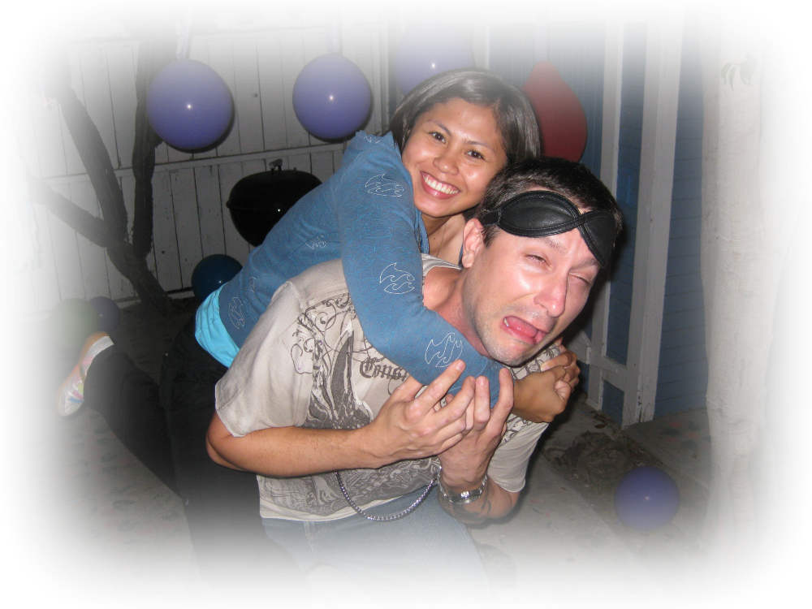

Currently I am in persuit of a career as a software engineer, preferably in or near Irvine, California. About 2 and a half years ago, I started a company, Random Sin Productions, with an artist/designer friend and we have been producing iPhone and Android applications ever since. You can get more details on our journey by clicking on the links above. Before that, I spent over 10 years in retail and restaurant management, then in 2004 I answered my countries call by joining the U.S. army as an infantry soldier. In the army I was promoted to Seargent after only 2 years and led an squad of outstanding young soldiers. When my time lapsed, I transitioned into college and will graduate in Spring 2016 from the University of California, Irvine, with a Computer Science Degree. Currently, I have a 3.920 GPA and will have completed Visual Computing and Networked System specializations upon graduation. While at UCI, I interned for a small educational software company, Kadho, here in Irvine for about 4 months. At Kadho, I was trusted to improve and finish a game that they had been working on titled, "Mochu's Kitchen."
Jiu Jitsu
Golf
Drums